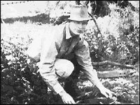
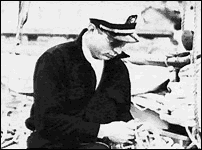

CHAPTER
THREE
Hubbard the Explorer
By his own account, Hubbard led his first
"expedition" while in college. In fact, the "Caribbean Motion Picture
Expedition" set out after Hubbard's last semester at college. Dates vary in the
Scientology accounts, but the "expedition" actually took place in the summer of
1932.
The "expedition" is mentioned frequently,
but briefly, in Scientology literature. It allegedly provided the "Hydrographic
Office" and the University of Michigan with "invaluable data for the furtherance
of their research." Hubbard's Church supports these claims with copies of the George
Washington newspaper, The University Hatchet, of May 1932, and the Washington
Daily News of September 13, 1932. As ever, the documents support only the basis of
Hubbard's story, and completely undermine his inflated claims.
The University Hatchet article preceded the
trip, and was enthusiastic about its possible outcome. The headline reads: "L. Ron
Hubbard Heads Movie Cruise Among Old American Piratical Haunts," and the article
gives considerable detail about the personnel and the objectives of the
"expedition." The equipment was to include a light seaplane. Cameras were to be
supplied by the University of Michigan. Among the personnel were to be "botanists,
biologists and entomologists."
The article continues: "Buccaneers, however, will
have the center of the stage. According to Hubbard, the strongholds and bivouacs of the
Spanish Main have lain neglected and forgotten for centuries, and there has never been a
concerted attempt to tear apart the jungles to find the castles of Teach, Morgan, Bonnet,
Bluebeard, Kidd, Sharp, Ringrose and L'Ollanais, to name a few."
Apparently Hubbard and crew intended to make
"motion pictures" for Fox Movietone News: "Down there where the sun is
whipping heat waves from the palms, this crew of gentlemen rovers will re-enact the scenes
which struck terror to the hearts of the world only a few hundred years ago - with the
difference that this time it will be for the benefit of the fun and the flickering ribbon
of celluloid .... Scenarios will be written on the spot in accordance with the legends of
the particular island, and after a thorough research through the ship's library which is
to include many authoritative books on pirates." Hubbard had become one of the eight
Associate Editors of The University Hatchet with this issue, so quite possibly he
wrote the piece. The style certainly fits.
The voyage took place aboard a 1,000 ton sailing ship,
the Doris Hamlin, captained by F.E. Garfield. Fifty students were to take part,
and the Hatchet article gives an impressive list of proposed ports of call.
However, the "expedition" failed to realize
its promise. On his return to the U.S., Hubbard wrote an article for the Washington
Daily News:
On June 23, 1932, the chartered fourmaster
schooner Doris Hamlin sailed from Baltimore for the West Indies with fifty-six
men aboard. Exclusive of six old sea dogs the crew consisted of young men between the ages
of twenty and thirty who thirsted for adventure and the high seas. A movie camera,
scientific apparatus and a radio completed the Caribbean Motion Picture Expedition . . .
Just twelve hours before the Doris Hamlin
slipped her whips, ten men cancelled their passage and left us in a delicate financial
situation . . . Our first port of call was Bermuda. The captain was ordered to stand off
the island while we landed for mail, but leaky water tanks gave him an excuse to put into
the harbor.
Towage, pilotage, and expensive water again
depleted the treasury. Two days at sea the water again leaked out and left us with the
same amount we had before entering Bermuda. Due to the prevailing direction of the trade
winds, it was necessary that we go to Martinique that we might make the more important
ports in our itinerary. At Fort de France, Martinique, we put in for mail and supplies.
I refused to turn money over to the captain.
Immediately, the crew demanded their wages. I wired home for more money, but before it
could arrive the captain told me he had received money from the owners and that the ship
was going back home. I fought the situation as well as I could but the consul at Fort de
France allowed a protest to be filed and my hands were tied.
In Bermuda eleven men had become disgusted
with the somewhat turbulent seas and had obtained discharges that they might return home.
We had fired our cook there... and had hired two men from Bermuda. In Martinique we lost
several other men who had become disgusted with the situation. When we left Martinique,
the whole aspect of the trip had changed. Morale was down to zero.
The Doris Hamlin called at Ponce, Puerto
Rico, then, on the insistence of its owners, returned to Baltimore. No mention was made of
any underwater filming, despite the Scientologists' claim that films made provided the
Hydrographic Office and the University of Michigan with "invaluable data." The
University of Michigan told Shannon they had no film, and knew nothing of the expedition.
Nor is there any mention of the buccaneer film, which was to have been the core of the
"expedition." The seaplane, mentioned in the article written before the trip
began, has also disappeared in Hubbard's account. The Doris Hamlin failed to
reach all but three of its sixteen proposed destinations.
A few years later, Hubbard wrote of the
"Caribbean Motion Picture Expedition": "It was a crazy idea at best, and I
knew it, but I went ahead anyway, chartered a four-masted schooner and embarked with some
fifty luckless souls who haven't stopped their cursings yet." 1
The Captain of the Doris Hamlin, who had
thirty years of seagoing experience, summed up by saying that it had been "the worst
trip I ever made." In an interview published in 1950, Hubbard was quoted as saying
"it was a two-bit expedition and a financial bust.'' 2
Undeterred, Hubbard undertook his next
"expedition" at the end of 1932. In his Mission into Time we read:
"Then in 1932, the true mark of an exceptional explorer was demonstrated. In
that year L. Ron Hubbard, aged twenty-one, achieved an ambitious 'first.' Conducting the
West Indies Minerals Survey, he made the first complete mineralogical survey of Puerto
Rico. This was pioneer exploration in the great tradition, opening up a predictable,
accurate body of data for the benefit of others. Later, in other, less materialistic
fields, this was to be his way many, many times over."
The Scientologists supply a survey report for
manganese, dated January 20, 1933, and signed "L. Ron Hubbard." There is also a
letter dated February 16, 1933, headed ' 'West Indies Minerals, Washington, D.C." The
letter's author says he was accompanied on a survey by L. Ron Hubbard. Attached to the
letter is a crude map entitled "La Plata Mine Assays," and signed with the
"LRH" monogram familiar to Scientologists.
As ever, Shannon explored more deeply. He found that a
Bela Hubbard had made a survey of the Lares district of Puerto Rico in 1923, but
the Puerto Rican Department of Natural Resources, the U.S. Geological Survey, and a
professor at the University of Puerto Rico, who had prepared the Geology of Puerto
Rico in 1932-1933, had no knowledge of L. Ron Hubbard.
 Armstrong says Hubbard had gone to Puerto Rico to prospect for gold (right).
3 This is supported by a photograph in Hubbard's Mission
into Time, with the caption, in his hand, "Sluicing with crews on Corozal River
'32." It is possible that Ron fled to Puerto Rico to avoid the legal claims brought
against him by members of his Caribbean "expedition." 4
Long before Scientology, Hubbard told stories about an
expedition to South America. Frank Gruber, who knew him in 1934, said Hubbard told him
about a four-year expedition to the Amazon. After the War, Hubbard told a fellow writer he
had been wounded by native arrows on this supposed expedition. 5 By the time Dianetics came along, this tall story had faded
away, to be replaced with others. There is one Scientology biographical sketch which makes
a fleeting mention of an "expedition" to Central America, made immediately on
his departure from college.
Hubbard also claimed to have been a barnstorming pilot
(nicknamed "Flash"). Shannon found that for two years Hubbard had a license for
gliders, but none for powered aircraft. The barnstorming career seems to have been another
student vacation, taken in the summer of 1931 with a friend who was an experienced pilot.
The Scientologists, in a 1989 publication called Ron
the Writer, claim that having left college Hubbard "went straight into the world
of fiction writing and before two months were over had established himself in that field
at a pay level which, for those times, was astronomical." Apart from a few
contributions to The University Hatchet Literary Review, Hubbard's only
commercially published article while at the University was for the Sportsman Pilot.
It was called "Tailwind Willies," and was published in January 1932, and it
probably earned little or nothing.
During 1932 and 1933, Hubbard contributed five
articles to the Sportsman Pilot, including one entitled "Music with Your
Navigation," and one to the Washington Star Supplement, called "Navy
Pets." That was his entire commercial output during those years; hardly enough to
support himself, let alone produce an "astronomical" level of pay.
It was not until 1934 that Hubbard's stories were
accepted by pulp magazines such as Thrilling Adventure, The Phantom Detective,
and Five Novels Monthly. His later denials of having written pulp wear thin given
some of the titles in question: "Sea Fangs," "The Carnival of Death,"
"Man-Killers of the Air," and "The Squad that Never Came Back."
Hubbard later wrote Western Fiction too.
The Church usually makes no mention of Ron's first two
marriages. Upon his return from Puerto Rico, Hubbard married Margaret Louise Grubb, in
Elkton, Maryland, on April 13, 1933. He called her "Polly," or
"Skipper," and she called him "Redhead." The first child,
"Nibs," or more properly Lafayette Ronald Hubbard, Jr., was born prematurely in
May 1934. In 1936, Polly bore Hubbard a daughter, Catherine May.
Summer 1934 found Hubbard living in a hotel in New
York, where he met Frank Gruber, also an aspiring pulp writer. They spent a lot of time
together, and in his book, The Pulp Jungle, Gruber told this story:
During one ... session Ron began to relate
some of his own adventures. He had been in the United States Marines for seven years, he
had been an explorer on the upper Amazon for four years, he'd been a white hunter in
Africa for three years... after listening for a couple of hours, I said, "Ron, you're
eighty-four years old, aren't you?" He let out a yelp, "What the hell are you
talking about? You know I'm only twenty-six."
Hubbard was actually twenty-three. Gruber had been
taking notes throughout:
"Well, you were in the Marines seven
years, you were a civil engineer for six years, you spent four years in Brazil, three in
Africa, you barn-stormed with your own flying circus for six years... I've just added up
all the years you did this and that and it comes to eighty-four years .... " Ron blew
his stack.
Gruber added: "I will say this, his extremely
vivid imagination earned him a fortune, some years later."
His Church claims that Hubbard moved to Hollywood in
1935, 1936 or 1937 (depending on which account you read), and while there wrote many major
films. Shortly after Gerald Armstrong started working on the Hubbard biographical Archive,
he was told that the film Dive Bomber, a 1941 Warner Brothers film release,
allegedly written by Hubbard, was to be shown to raise money for the legal defense of
eleven indicted Scientology staff members. Armstrong started researching the background of
the film in February 1980.
I obtained a copy of the short story [Dive
Bomber] which Mr. Hubbard had written and had been produced in a pulp magazine in, I
believe, 1936 .... I read through the story and then I went to the Academy of the Motion
Pictures Arts and Sciences here in Los Angeles . . . and I obtained a copy... of the
screen play or, at least, a synopsis or a treatment. And I realized that the two were
completely different.
And I also saw that Mr. Hubbard's name was not
noted in the credits. And I believe there were a couple of writers noted .... I checked
their names against other records... and confirmed that they couldn't have been him
because they were writing on several other movies which he could not possibly have been
involved with. So they weren't pseudonyms he was using.
Armstrong was in a quandary: "It would have been
embarrassing if someone had said, 'where is your name' and his name wasn't on it. People
had paid money. So I thought perhaps I could come up with something else that could be a
substitute .... I wrote to Mr. Hubbard and let him know what I had found to date . . . he
didn't answer me. But he sent down a dispatch." 6
Hubbard's dispatch, dated February 11, 1980, was sent
to the organizer of the showing. It was read into the court record, in the Armstrong case.
7 Hubbard claimed that Warner Brothers had forgotten to put his
name on the movie, and had paid him after distribution. He had not cashed the check until
the end of the war, when he used the money for a trip to the Caribbean.
Hubbard's most noteworthy work during his brief time
in Hollywood was the co-authorship of a 15 part serial called The Secret of Treasure
Island. He was, however, a successful pulp writer. Many of his stories were published
during the 1930s. Among his pseudonyms were Rene Lafayette, Legionnaire 148, Lieutenant
Scott Morgan, Morgan de Wolf, Michael de Wolf, Michael Keith, Kurt von Rachen, Captain
Charles Gordon, Legionnaire 14830, Elron, Bernard Hubbel, Captain B.A. Northrup, Joe Blitz
and Winchester Remington Colt.
Only his remarkable writing output enabled Hubbard to
make a living in those "penny-a-word" days. He wrote a number of "true
stories," two of which concerned his alleged experiences in the French Foreign
Legion. His first hard-covered book, Buckskin Brigades, was published in 1937.
According to Hubbard, his first philosophical
breakthrough came in 1938, with the discovery that the primary law of all existence is
"Survive!" The notion that everything that exists is trying to survive became
the basis of Dianetics and Scientology.
In 1938, Hubbard detailed his supposed insights in a
book called Excalibur. Hubbard's hints about Excalibur are the source of
several Scientology myths. It is whispered that the entirety of Scientology was available
in the book, but in such a concentrated form that many people would have gone mad had they
read it. Indeed, in an early Scientology promotional piece, it was claimed that fifteen
copies of Excalibur were distributed, but four of the people who read the book
went mad as a result, so the manuscript was withdrawn. The book has never been published.
Gerald Armstrong found three different manuscripts of Excalibur
among Hubbard's personal effects, one of which was between 300 and 400 pages long. 8 Later, someone who had seen a version of Excalibur
said it was so "dangerous" he would "willingly let his four-year-old
daughter read it."
Writer A.E. van Vogt, an important figure in the early
Dianetic movement, has said that Hubbard claimed his heart had stopped for six minutes
during an operation, in 1938. Excalibur was the result of the revelation Hubbard
had during this near death experience. Armstrong has said it was a dental extraction under
nitrous oxide. Hubbard told his literary agent that a "smorgasbord" of knowledge
had been laid out before him. He had absorbed it all, and managed to avoid the command to
forget, which was the last part of the incident. Excalibur is an expansion of
Hubbard's argument that "Survive!" is the basic law of existence. Hubbard's
friend and fellow writer, Arthur Burks, saw the book when it was offered to publishers in
New York in the summer of 1938. He was impressed, but could not manage to instill his
enthusiasm into a publisher. Burks later hinted that he put up money for the book to be
published, but that Hubbard returned to Port Orchard in the autumn, dejected that he had
failed to find a proper publisher, taking Burks' money with him. 9
Hubbard often claimed that the only people who
understood the value of his research in 1938 were the Russians. In an interview given in
1964, he said that the Russians had offered him $100,000 and laboratory facilities he
needed in the USSR, so that he could complete his work. After Hubbard refused, a copy of Excalibur
was stolen from his hotel room in Miami. Hubbard made no mention of these supposed events
when complaining to the FBI about approaches from the Russians in 1951. 10
In 1938, Hubbard became a science fiction writer,
claiming he was "summoned" by the publishing firm of Street & Smith to write
for Astounding Science Fiction. Hubbard protested that he wrote about people, not
machines, and was told that this was precisely what was needed.
Hubbard joined editor John Campbell's circle of
friends, and became a major contributor to the reshaping of science fiction which Campbell
brought about. Campbell was also to figure in the birth of Dianetics, twelve years later.
Recently this pre-war period has been dubbed the Golden Age of Science Fiction. Hubbard's
work appeared alongside that of Robert Heinlein, A.E. van Vogt, and Isaac Asimov, each of
whom has stated his admiration for Hubbard's stories. Although Hubbard's writing was
patchy in places, he certainly had a very inventive imagination. He became a regular
contributor to Astounding, moving back to New York in the autumn of 1939.
Hubbard's interest in the occult continued, and for
six months in 1940 he belonged to the Ancient and Mystical Order Rosae Crucis (AMORC). He
completed the first two "neophyte" degrees (probably by mail) before his
membership lapsed on July 5, 1940. 11
In February 1940, Hubbard was accepted as a member of
the Explorers' Club of New York (though one Scientology account says 1936). According to
his book Mission into Time, Hubbard was awarded the Explorers' Club Flag in May
1940, for an expedition to Alaska aboard his ketch, the Magician. Hubbard called
this trip the "Alaskan Radio Experimental Expedition." Another Scientology
account claims the expedition was undertaken for the U.S. Government.
 Hubbard seems to have been trying out a new system of radio navigation
developed by the Cape Cod Instrument Company. At least the Scientologists provide
documentation to that effect. The "expedition" seems to have consisted of
Hubbard and his first wife, Polly, aboard the 32-foot Magician (right).
Some film was sent gratuitously to the U.S. Navy Hydrographic Office. As ever, we are
faced with a germ of truth embedded in Hubbard's exaggeration. The habit of a lifetime.
In a letter sent to the Seattle Star in November 1940,
Hubbard complained that his Alaskan trip had been greatly delayed by frequent failures of
the boat's motor. Repairs had been expensive, and Hubbard and his wife were stranded in
Ketchikan while he tried to write and sell enough stories to bail them out. Eventually he
borrowed $265 from the Bank of Alaska, a debt he blithely forgot as soon he departed. 12
Hubbard was apparently an accomplished sailor,
receiving a License to Master of Steam and Motor Vessels in December 1940, and a License
to Master of Sail Vessels (any Ocean), in May 1941.
In 1938, Hubbard had failed to secure a place in the
Air Corps, and in 1939 the U.S. War Department turned him down. By the spring of 1941,
Hubbard was living in New York, and waging an all-out campaign for a commission in the
U.S. Naval Reserve with assignment to intelligence duties.
Hubbard pursued this objective by coaxing his friends
to write letters of reference to the U.S. Navy. 13 In March, Jimmy Britton of KGBU radio in Alaska wrote to the
Secretary of the Navy, claiming that during a "ten month" stay in Alaska,
Hubbard had been "instrumental in bringing to justice a German saboteur who had
devised it to be in his power to cut off Alaska from communication with the U.S. in time
of war." Hubbard does not seem to have mentioned this episode himself, but it is
highly likely that Britton heard the story from Hubbard. Hubbard, in a letter to the Seattle
Star written in 1940, said he had been in Alaska from July to November. Britton said
Hubbard had spent ten months in Alaska.
There was a letter from Commander W.E. McCain, of the
U.S. Navy which stated: "I have found him to be of excellent character, honest,
ambitious and always very anxious to improve himself, to better himself and become a more
useful citizen." A letter written in April 1941, by Warren Magnuson of the House of
Representatives to President Roosevelt, said: "An interesting trait is his distaste
for personal publicity. He is both discreet and resourceful as his record should
indicate."
One letter, allegedly from a professor at George
Washington University, explained that Hubbard's "average grades in engineering were
due to the obvious fact that he had started in the wrong career. They do not reflect his
great ability."
In May came a letter from Robert Ford, also of the
House of Representatives, who recommended Hubbard as, "one of the most brilliant men
I have ever known . . . discreet, loyal, honest." Ford says that he and Hubbard were
close friends at the time, and admits that he probably gave Hubbard some of his note-paper
and told him to write whatever he liked. 14
Lastly, a letter from the editor of Astounding Science
Fiction, John Campbell, who confined himself mainly to praise of Hubbard's ability to turn
in a story on time, but added: "In personal relationships, I have the highest opinion
of him as a thoroughly American gentleman."
Hubbard stepped up his campaign after he was rejected
by the U.S. Navy Reserve in April. His eyesight was inadequate. However, with the
expansion of the armed forces due to the growing U.S. committment to the European war,
Hubbard's poor eyesight was waived, and he achieved his goal. In July 1941, five months
before the attack on Pearl Harbor, the U.S. Navy finally yielded to Hubbard's entreaties,
and gave him a commission in the Reserve.
FOOTNOTES
Additional sources: Hubbard,
Mission into Time (American St Hill Organization, 1973); Flag Divisional Directive
69RA, ""Facts About L. Ron Hubbard Things You Should Know," 8 March 1974,
revised 7 April 1974; FSM magazine 1; A Report to Members of Parliament on
Scientology (Worldwide PR Bureau, Church of Scientology, 1968); Hubbard's college
grade sheets; The University Hatchet; Washington Daily News, 13
September 1932; Gruber, The Pulp Jungle; Flag Divisional Directive 69RA,
""Facts About L. Ron Hubbard Things You Should Know," 8 March 1974, revised
7 April 1974; "L. Ron Hubbard," by the LRH Public Affairs Bureau, Church of
Scientology of California, 1981; Motion Picture Herald, 23 January 1937; Hubbard,
Battlefield Earth, p. viii; Rocky Mountain News, 20 February 1983
1. Adventure, 1935.
2. Look magazine, 5
December 1950.
3. Vol. 12, p.1972 of
transcript of Church of Scientology of California vs. Gerald Armstrong, Superior
Court for the County of Los Angeles, case no. C 420153.
4. Vol. 11, p.1867-8 of
transcript of ibid.
5. Alva Rogers, Darkhouse
6. Vol. 10, p.1577 of
transcript of ibid.
7. Vol. 10, pp.1581-3 of
transcript of ibid.
8. Vol. 15, pp.2423-4 of
transcript of ibid.
9. Dianetic Auditors
Bulletin III, no.l; Aberree, December 1961.
10. Exhibit 500-6J, Church
of Scientology of California vs. Gerald Armstrong, Superior Court for the County of
Los Angeles, case no. C 420153; Hubbard letter to FBI, May 1951.
11. Letter to the author
from AMORC, 1984.
12. Exhibit 500-3H, ibid.
13. Letters from Hubbard
naval record.
14. Russell Miller interview
with Robert Macdonald Ford, Olympia, Washington, 1 September 1986. |